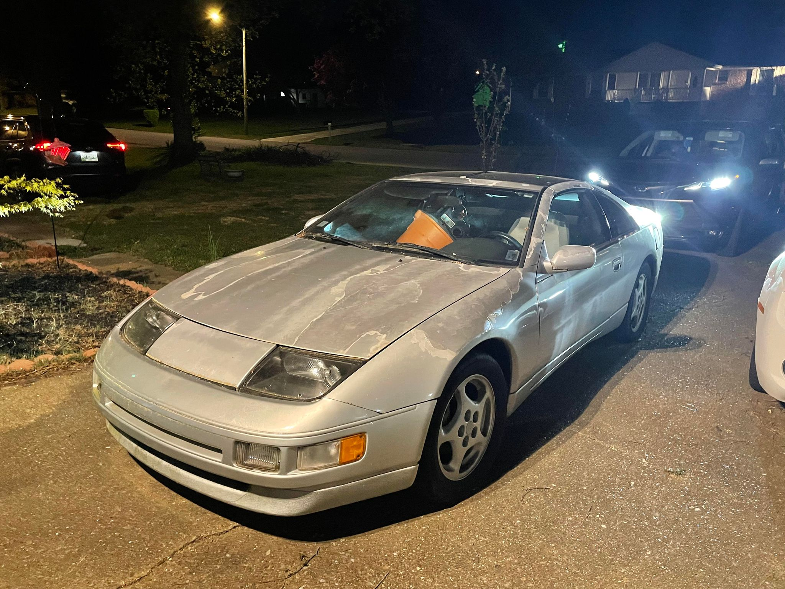

Nissan's Second generation 300ZX, the Z32 was a behemoth in the 90s. Carrying a VG30DETT, this car came stock with 300 Horsepower, although tuners easily push them to mid 600's without replacing anything internally.
I got to come through and help with the paint! It was my first time, and we'd made a couple mistakes, but you wouldn't think it to be the same car, huh?
We eventually plan to rebuild the engine, but it's an absolute hassle to work on these, so we're letting it live out the life it has left first. This is the first "complete" car I've been a part of!
Mid january is the worst time to paint a car. Ask how I know! We got all our supplies, prepped until the sun went down, then we started to lay the paint. It actually went very smoothly! Only a handful of runs and bubbles, that'll hopefully disappear when we polish the paint! Clearcoat tends to go everywhere, much like a dense fog, and so by the time we'd laid the last layer of clear onto the car, the entire neighborhood looked like it was straight out of Silent hill. It was awesome.